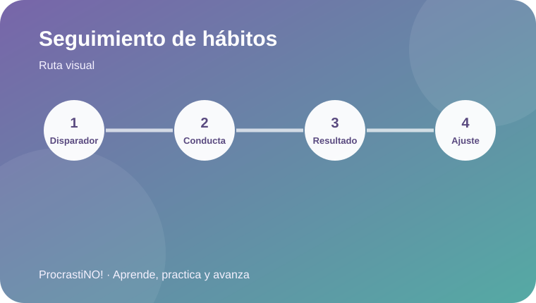

Módulo 5 · 5
Autoevaluación y seguimiento de hábitos
Observa disparadores, conductas y resultados para ajustar estrategias de estudio.


Mide para ajustar
Una autoevaluación útil conecta disparador, conducta y resultado. En lugar de juzgarte, observa qué ocurrió, qué funcionó y qué pequeño cambio probarás después.
🔎 Disparador
🧭 Conducta
📊 Resultado
🔧 Ajuste
Idea clave:
Registra durante una semana un hábito concreto y decide un solo ajuste para la siguiente semana.
Referencias
- American Psychological Association. (2024). Better learning. https://www.apa.org/education-career/training/psyclearn-student-better-learning